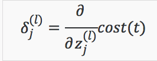
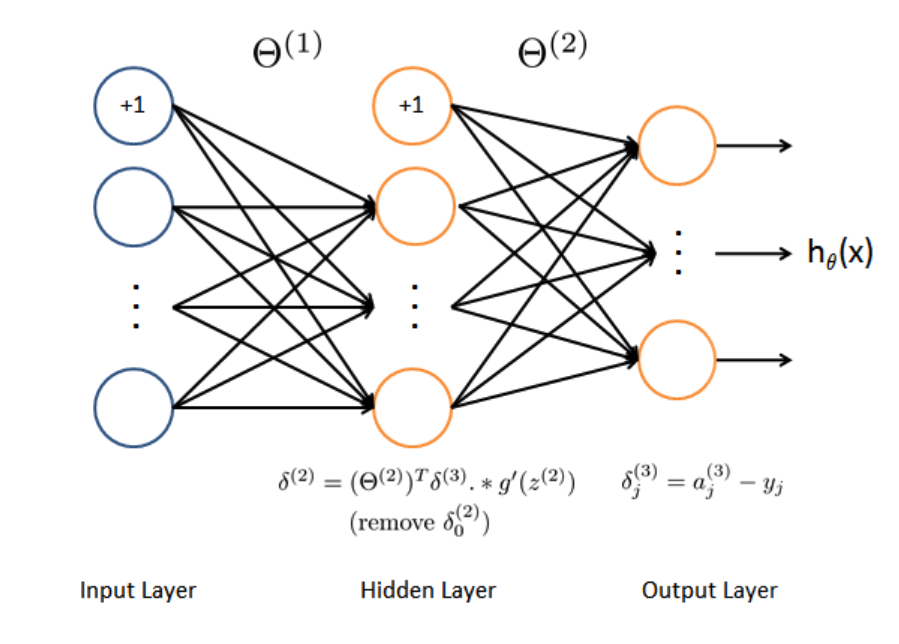
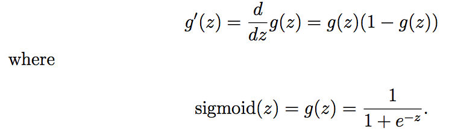
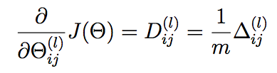

Machine learning week 5 - Neural Networks: Learning
Cost Function
Neural network model

Let's first define a few variables that we will need to use:
- L = total number of layers in the network
- sl = number of units (not counting bias unit) in layer l
- K = number of output units/classes
Cost function

Note:
- the double sum simply adds up the logistic regression costs calculated for each cell in the output layer
- the triple sum simply adds up the squares of all the individual Θs in the entire network.
- the i in the triple sum does not refer to training example i
Backpropagation Algorithm
"Backpropagation" is neural-network terminology for minimizing our cost function. The goal of Backpropagation is to minimize J(theta) - the cost function of NN, using an optimal set of parameters in theta: namely minΘJ(Θ).
Backpropagation Intuition

*The δ(l)j is the error for a(l)j, expressed as the derivative of the cost function.The derivative is the slope of a line tangent to the cost fucntion, so the steeper the slope the more incorrect we are. *

In the image above, to calculate δ(2)2, we multiply the weights Θ(2)12 and Θ(2)22 by their respective δ values found to the right of each edge. So we get δ(2)2= Θ(2)12δ(3)1+Θ(2)22δ(3)2. To calculate every single possible δ(l)j, we could start from the right of our diagram. We can think of our edges as our Θij. Going from right to left, to calculate the value of δ(l)j, you can just take the over all sum of each weight times the δ it is coming from. Hence, another example would be δ(3)2=Θ(3)12*δ(4)1.
Unrolling Parameters
- It becomes more convenient when the theta or gradient parameters are packed into a bigger matrix, facilitating the vectorized operations.
- Unrolling matrix of parameters and putting them into one long vector before using the optimizing function such as fminunc().

Gradient Checking
Gradient Checking is designed to ensure that the deltaVector function works as intended. We can approximate the derivative of the cost function J(theta).
The approximation can be implemented by adding or subtracting epsilon to the theta matrix, as shown in octave codes as follows:
epsilon = 1e-4;
for i = 1:n,
thetaPlus = theta;
thetaPlus(i) += epsilon;
thetaMinus = theta;
thetaMinus(i) -= epsilon;
gradApprox(i) = (J(thetaPlus) - J(thetaMinus))/(2*epsilon)
end;
Random Initialization
The use of all-zero matrix for parameters initialization would result in repeated updating to the same values in all nodes during backpropagation. Random initialization of weights for theta matrix circumvent the problem of symmetry breaking.
Initializing weights with zeros for theta matrix doesn't work with neural network. When we backpropogate, the optimal values will update to the same values for all nodes.
Briefly, we initialize each theta with a random value between [-epsilon , epsilon]. Using this formula guarantees that we get the desired bound. We can apply the same technique to multi-dimentional J(theta) matrix.
If the dimensions of Theta1 is 10x11, Theta2 is 10x11 and Theta3 is 1x11.
Theta1 = rand(10,11) * (2 * INIT_EPSILON) - INIT_EPSILON;
Theta2 = rand(10,11) * (2 * INIT_EPSILON) - INIT_EPSILON;
Theta3 = rand(1,11) * (2 * INIT_EPSILON) - INIT_EPSILON;
Putting it Together
First, pick a network architecture; choose the layout of your neural network, including how many hidden units in each layer and how many layers in total you want to have.
- Number of input units = dimension of features x(i)
- Number of output units = number of classes
- Number of hidden units per layer = usually more the better (must balance with cost of computation as it increases with more hidden units)
- Defaults: 1 hidden layer. If you have more than 1 hidden layer, then it is recommended that you have the same number of units in every hidden layer.
Training a Neural Network
- Randomly initialize the weights
- Implement forward propagation to get hΘ(x(i)) for any x(i)
- Implement the cost function
- Implement backpropagation to compute partial derivatives
- Use gradient checking to confirm that your backpropagation works. Then disable gradient checking.
- Use gradient descent or a built-in optimization function to minimize the cost function with the weights in theta.
for i = 1:m,
Perform forward propagation and backpropagation using example (x(i),y(i))
(Get activations a(l) and delta terms d(l) for l = 2,...,L

The image shows an intuition of how gradient descent works as we are implementing our neural network. The gradient descent algorithm keeps iterating and exploring the data pool until it reaches a local minimum where hΘ(x(i)) ~= y(i). The optimization process, as the the cost function is not convex, could only result in local minimum instead getting to the global optimum, but it normally doesn't cause huge problem in practice.
Summarization
- Cost function - J(theta)

J = (1/m) .* sum ( sum ((-yk) .* log(h_theta) - (1-yk) .* log(1-h_theta) )) + ...
lambda ./ (2 * m) .* (sum(sum(Theta1(:, 2:end) .* Theta1(:, 2:end))) + ...
sum(sum(Theta2(:, 2:end) .* Theta2(:, 2:end))))
- Forward propagation

- Backward propagation

The intuition behind the backward propagation can be described as: given dataset of training sample (Xt, Yt), we first calculate the activations of the whole neural network via forward propagation, including those for neural units in each hidden layer and of output value for h(theta). We then compute the error terms that reflect how much of that node was 'responsible' for any errors in our output. Concretely, for the output layer the error terms can be directly measured by subtracting actual value from network's activations. For the hidden units, the error terms in layer L can be computed based on weighted average of the error terms of the nodes in layer L + 1, that can be expressed as an equation that involves multiplication of matrix of theta, error terms of next layer and sigmoid gradient.
Sigmoid gradient

Random initialization
% Randomly initialize the weights to small values
% epsilon_init = sqrt(6)/(sqrt(L_in) + sqrt(L_out))
epsilon init = 0.12;
W = rand(L out, 1 + L in) * 2 * epsilon init − epsilon init;
- Backward propagation implementation

1) Use loop function over training samples and compute the activations for each layer, namely values of z and a. Note that an all-one term needs be added to the vectors of activations to include the bias unit in each layer.
2) Calculate the delta value(errors) for output layer by measuring the difference between the activation and true value.

3) Calculate the error terms, namely the delta value, for hidden layer as follows:

4) Compute the accumulated gradient for given sample using the following formulas, where the delta2_0 is skipped or removed.

5) The gradient for the neural network cost function can then be obtained by dividing the accumulated gradients by 1/m:

Subscribe to Dong Liang's Blog
Get the latest posts delivered right to your inbox